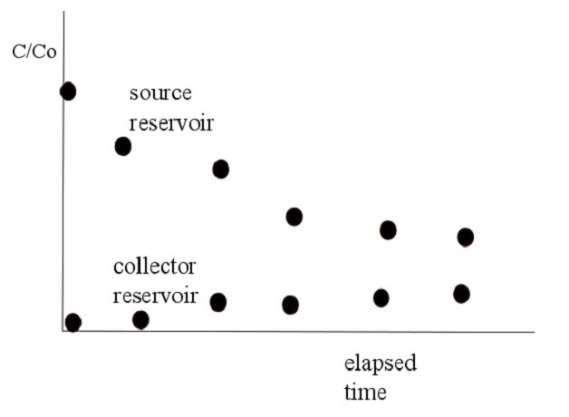
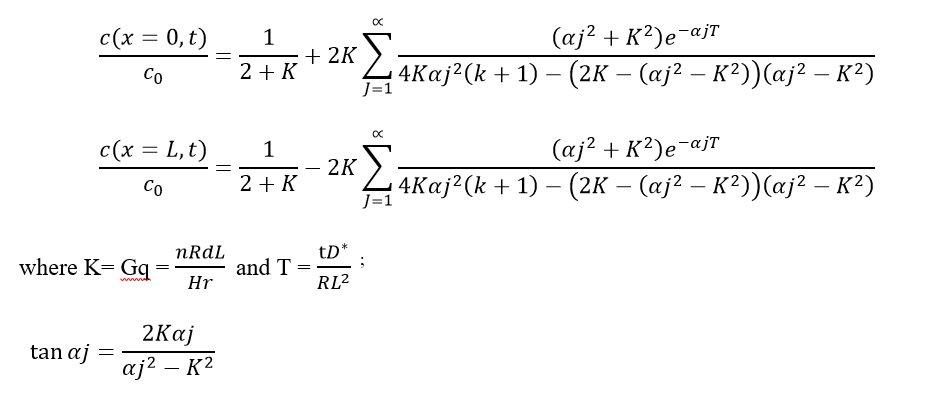
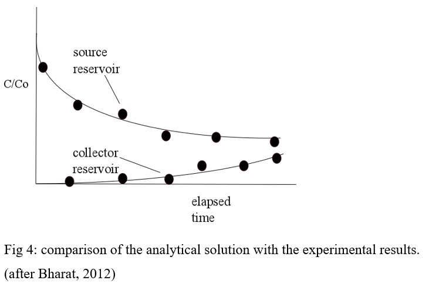

In the double reservoir technique as described by Barone et al., 1992, Rowe et al., 1988 and Shackelford, 1991, the intact plug of barrier material (clay) is placed within the diffusion cell. A source and a collector reservoir is connected to the clay plug as shown in figure 1. The solution that is placed in the source solution may be distilled water spiked with the concerned organic species. And the collector solution is of pure distilled water. The initial concentration of the source solution is c0. After the introduction of the leachate in the source reservoir mass transport of the chemical constituents takes place by molecular diffusion due to concentration gradient (Shackelford, 1989). Due to the mass transport the concentration of the source reservoir decreases with time and the concentration in the collector reservoir increases with time. The variation of the concentrations in the source and the collector reservoir from experimental results is shown in figure 2.
Fig 2: Transient through diffusion set-up (after Bharat, 2012)
Fig 3: concentration variation from experimental results (after Bharat, 2012)
Using mathematical models, mass transport parameters are analyzed from the variation of the observed concentration profiles with time (Bharat, 2012). During the diffusion testing the source and the collector reservoir are monitored periodically to obtain the variation of the organic species concentration with time. Fitting of the theoretical variation of the species with observed experimental variation, it is possible to calculate the value of the diffusion coefficient D*. The initial and boundary conditions of the model as depicted in figure 2 are:
Initial condition:
where c_0 is the initial concentration of the organic species at time t = 0 and H_s and H_c are the equivalent height of the source and collector reservoir respectively. Using the above initial and boundary conditions the analytical solutions showing the variation of concentration in the source and collector reservoir is given by Bharat, 2013:
Using several values of D* and Rd, theoretical curves for the variation of concentration of organic species in the source and the collector reservoir are developed. The curves are best fitted with the curve obtained from experimental data. The best fit curve will give an indication of the D* value of the particular organic species (Barone, 1992). Figure 4 shows the experimental and theoretical results where the concentration variation are plotted with time and the best fit curve is the one which almost converges.
